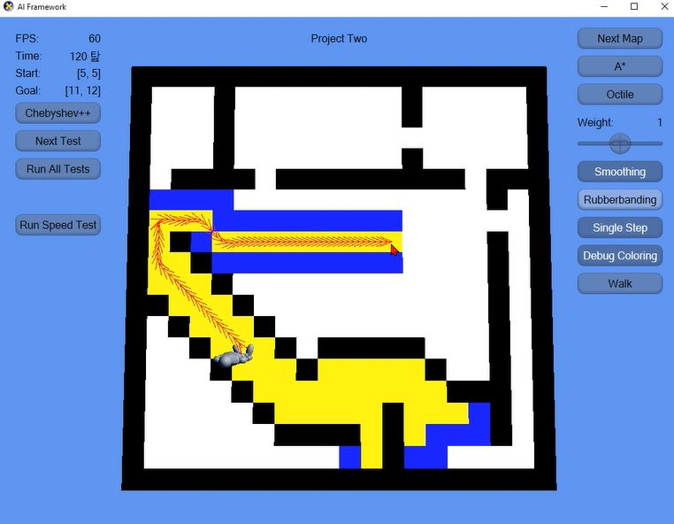

AI Project
Academic Project
Used: C++
Overview
Description
A* Algorithm
This project is academic project using AI framework which is given by professor. I implemented and studied the A* algorithm.

A* algorithm
Optimized Racing Line
This project is team project with two students. We studied a paper about the "Optimized Racing Line". And then we tried to make the demo of this paper.
I developed the graphics engine and system engine. And I also calculated optimized racing line.
The red line is general line which is just center of the barriers. The blue line is optimized racing line.
Optimized racing line